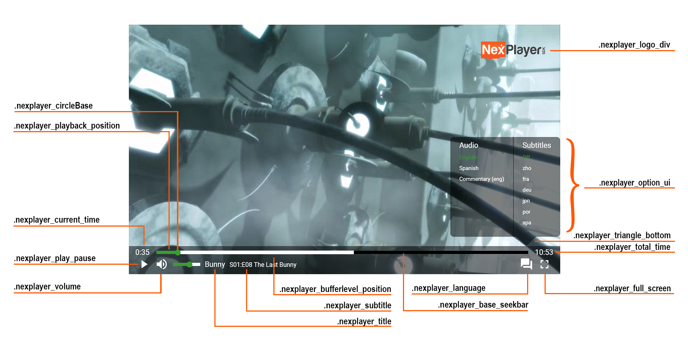

Player UI CSS Class Reference

Introduction
This document provides an explanation of the UI and all the related CSS classes that can be modified to customize the default UI of the player.
CSS Classes
| CSS Class | Description |
|---|---|
| .nexplayer_play_pause | Customize the play/pause button |
| .nexplayer_volume | Customize the volume button |
| .nexplayer_current_time | Customize the current time text |
| .nexplayer_title | Customize the title text |
| .nexplayer_subtitle | Customize the subtitle text |
| .nexplayer_airplay | Customize the AirPlay cast button |
| .nexplayer_language | Customize the language options button |
| .nexplayer_full_screen | Customize the full screen button |
| .nexplayer_total_time | Customize the total time text |
| .nexplayer_option_ui | Customize the language options menu |
| .nexplayer_triangle_bottom | Customize the triangle below .nexplayer_option_ui |
| .nexplayer_logo_div | Customize the logo watermark |
| .nexplayer_playback_position | Customize the already played part of the seekbar |
| .nexplayer_bufferlevel_position | Customize the buffered part of the seekbar |
| .nexplayer_base_seekbar | Customize the default part of the seekbar |
| .nexplayer_circleBase | Customize the current postion marker of the seekbar |
Please take into account that the seekbar and the volume control bar are the same component. So if you modify the .nexplayer_playback_position, .nexplayer_bufferlevel_position, .nexplayer_base_seekbar, or .nexplayer_circleBase css classes, then the volume control bar will change accordingly.
Please note that to overwrite the styles, the JavaScript file should be imported before the desired customizations.
Responsive Configuration
The size of the UI adapts according to the size of the player. There are three different css classes that control this behavior:
| CSS Class | Description |
|---|---|
| .nexplayer_container | Main container |
| .nexplayer_container_normal | Standard size of the player > 768px |
| .nexplayer_container_mobile | Mobile size of the player > 461px |
| .nexplayer_container_tiny | Tiny size of the player < 461px |
Modifying the .nexplayer_container class will bring the changes to every platform. In order to customize individual or more platforms in a different way, the .nexplayer_container class should be followed by the desired platform class:
.nexplayer_container .nexplayer_container_normal <class to modify>
.nexplayer_container .nexplayer_container_mobile <class to modify>
.nexplayer_container .nexplayer_container_tiny <class to modify>
Font
The font of the player can be customized using the following code:
.nexplayer_container {
font-size: 20pt;
color: blue;
font-family: sans-serif;
}
Overwriting Styles
To overwrite the CSS styles of the default UI, the correct container name has to be added:
Button
.nexplayer_container .nexplayer_container_normal .nexplayer_play_pause {
background-color: yellow;
}
.nexplayer_container .nexplayer_container_mobile .nexplayer_play_pause {
background-color: blue;
}
.nexplayer_container .nexplayer_container_tiny .nexplayer_play_pause {
background-color: red;
}
Seekbar
.nexplayer_container .nexplayer_circleBase {
background-color: white;
}
.nexplayer_container .nexplayer_base_seekbar {
background-color: blue;
}
.nexplayer_container .nexplayer_bufferlevel_position {
background-color: yellow;
}
.nexplayer_container .nexplayer_playback_position {
background-color: red;
}
Modify the Selected Language Style
To customize the selected language style on the .nexplayer_option_ui menu, the following code should be used:
.nexplayer_container .nexplayer_option_ui .nexplayer_selected_element {
color: green;
}
Control Bar Style
To customize the bottom control bar:
.nexplayer_container .nexplayer_bar {
background-color: green;
}
Icon Changing
In order to change the default icons of the player, the following code should be used:
.nexplayer_container .nexplayer_IconPause {
background-image: url(replay.svg) !important;
}
Please note that we recommend using SVG icons. The list of all the CSS classes that defines the icons is:
| Css classes | Description |
|---|---|
| .nexplayer_IconPlay | Play icon |
| .nexplayer_IconPause | Pause icon |
| .nexplayer_IconReset | Reset icon |
| .nexplayer_IconVolume | Volume icon |
| .nexplayer_IconMuted | Muted volume icon |
| .nexplayer_IconFullscreen | Full screen icon |
| .nexplayer_IconExitFullscreen | Exit full screen icon |
| .nexplayer_IconLanguage | Language options icon |
| .nexplayer_IconAirplay | AirPlay cast icon |
| .nexplayer_IconTriangle | The triangle below the .nexplayer_option_ui |
Hover Effect Icons
Any icon has a predefined effect when the user hovers the mouse over or touches an icon.
This behavior can be customized with the hover selector on the .nexplayer_icon CSS class:
.nexplayer_container .nexplayer_icon:hover {
filter: drop-shadow(8px 8px 8px red);
}